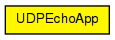

Similar to UDPBasicApp, but it sends back the packet after reception.

The following diagram shows usage relationships between types. Unresolved types are missing from the diagram.
The following diagram shows inheritance relationships for this type. Unresolved types are missing from the diagram.

| Name | Type | Default value | Description |
|---|---|---|---|
| localPort | int | ||
| destPort | int | ||
| messageLength | int |
length of messages to generate, int bytes |
|
| messageFreq | double |
should usually be a random value, e.g. exponential(1) |
|
| destAddresses | string | "" |
list of IP addresses, separated by spaces |
| Name | Value | Description |
|---|---|---|
| display | i=block/app |
| Name | Direction | Size | Description |
|---|---|---|---|
| udpIn | input | ||
| udpOut | output |
// // Similar to UDPBasicApp, but it sends back the packet after reception. // simple UDPEchoApp like UDPApp { parameters: int localPort; int destPort; volatile int messageLength @unit("B"); // length of messages to generate, int bytes volatile double messageFreq @unit("s"); // should usually be a random value, e.g. exponential(1) string destAddresses = default(""); // list of \IP addresses, separated by spaces @display("i=block/app"); gates: input udpIn @labels(UDPControlInfo/up); output udpOut @labels(UDPControlInfo/down); }